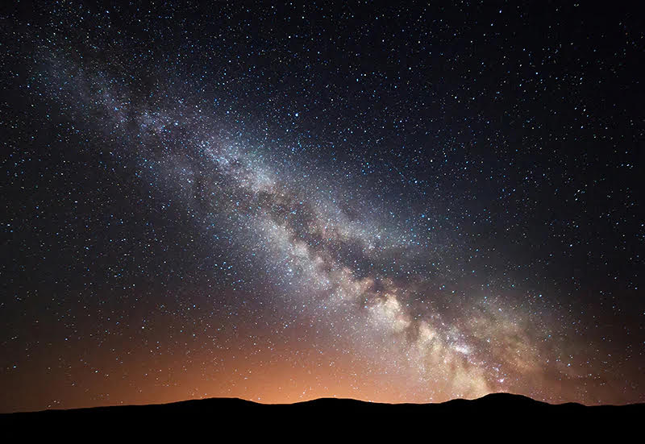
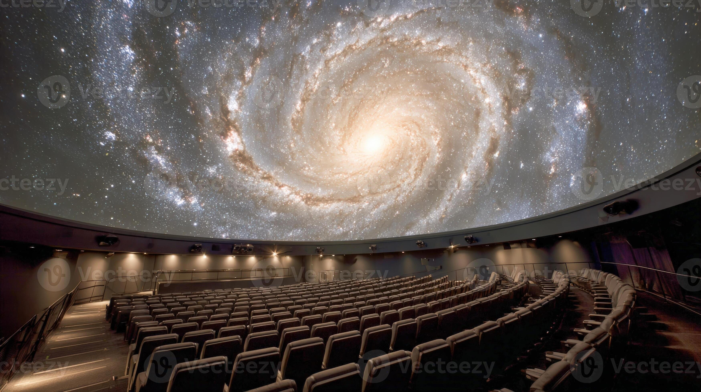

Welcome to BigPlanetarium
We are a Bristol-based planetarium dedicated to bringing the wonders of space to everyone. We aim to make learning about the universe enjoyable, interesting, and easy to understand. Whether you are a curious learner or simply fascinated by the stars, this website is here to help you explore and learn.
Explore the Milky Way, learn about the planets, and discover more about Saturn through images, video, and interactive features.
Explore the Milky Way
Who Are We?
BigPlanetarium is based in the heart of Bristol. We offer dome shows, interactive exhibits, and live telescope sessions for the public and for schools.
We believe science is for everyone. No experience needed - just bring your curiosity!
- Located in central Bristol
- Open Mon-Fri 9am-6pm, Sat-Sun 10am-8pm
- Free entry for under 12s
- Special school group rates available

Did You Know?
Click the button below to reveal a space fact.
Watch and Learn
The whole universe explained simply.